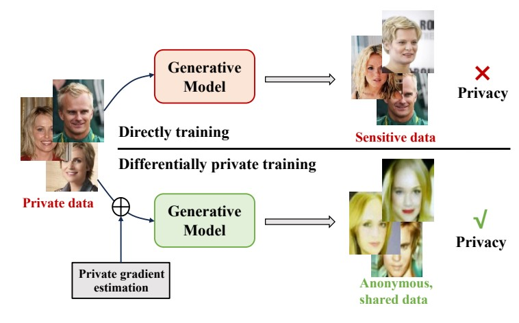
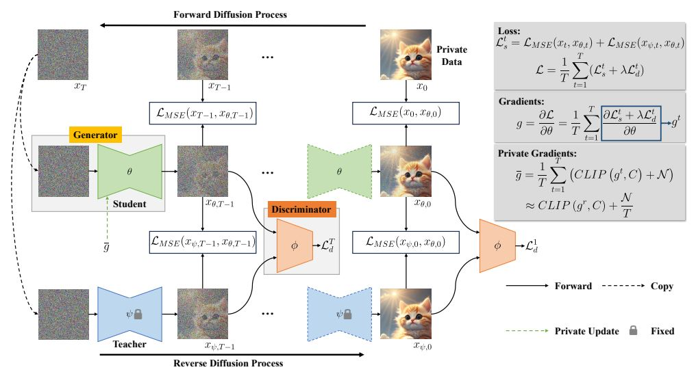

|
Bochao Liu I'm a Ph.D student at Institute of Information Engineering, Chinese Academy of Sciences in Beijing, advised by Prof. Shiming Ge. I received my B.S. degree in Electronical Information Science and Technology from the School of Information Science and Engineering in Shandong University. From December 2023 to the end of May 2024, I interned at the AI Safety Group of Baidu. Currently, I am an intern at the Data Storage Product Line of Huawei. My research interests include AIGC, generative models, differentially private learning, computer vision. Feel free to connect me via email: liubochao@iie.ac.cn. |

|
News
|
Selected Publications (Full list) |
|

|
Bochao Liu, Pengju Wang, Weijia Guo, Yong Li, Liansheng Zhuang, Weiping Wang and Shiming Ge* ACM MM, 2024, Oral While generative models have proved successful in many domains, they may pose a privacy leakage risk in practical deployment. To address this issue, differentially private generative model learning has emerged as a solution to train private generative models for different downstream tasks. However, existing private generative modeling approaches face significant challenges in generating high-dimensional data due to the inherent complexity involved in modeling such data. In this work, we present a new private generative modeling approach where samples are generated via Hamiltonian dynamics with gradients of the private dataset estimated by a well-trained network. In the approach, we achieve differential privacy by perturbing the projection vectors in the estimation of gradients with sliced score matching. In addition, we enhance the reconstruction ability of the model by incorporating a residual enhancement module during the score matching. For sampling, we perform Hamiltonian dynamics with gradients estimated by the well-trained network, allowing the sampled data close to the private dataset's manifold step by step. In this way, our model is able to generate data with a resolution of 256x256. Extensive experiments and analysis clearly demonstrate the effectiveness and rationality of the proposed approach. |
|

|
Bochao Liu, Pengju Wang and Shiming Ge* ECCV, 2024 pdf / code This paper trains a private diffusion model by a stochastic adversarial distillation method. Specifically, we first train a diffusion model as a teacher and then train a student by distillation, in which we achieve differential privacy by adding noise to the gradients from other models to the student. For better generation quality, we introduce a discriminator to distinguish whether an image is from the teacher or the student, which forms the adversarial training. |

|
Bochao Liu, Pengju Wang, Shikun Li, Dan Zeng and Shiming Ge* IJCAI, 2023 pdf / code This paper propose a learning approach termed differentially private data-free distillation (DPDFD) for model conversion that can convert a pretrained model (teacher) into its privacy-preserving counterpart (student) via an intermediate generator without access to training data. This work implements SOTA in the field of differentially private learning and theoretically proves that DPDFD can guarantee differential privacy and well convergence. |

|
Shiming Ge, Bochao Liu, Pengju Wang, Yong Li* and Dan Zeng (First Student Author) TIP, 2023 This paper proposed a discriminative-generative distillation approach to learn privacy-preserving deep models. The key idea is taking models as a bridge to distill knowledge from private data and then transfer it to learn a student network via two streams. |

|
Bochao Liu, Jianghu Lu, Pengju Wang, Junjie Zhang, Dan Zeng, Zhenxing Qian, Shiming Ge* MMSP, 2022, (Best Student Paper-Honorable Mention Award) This paper presents an effective teacher-student learning approach to train privacy-preserving deep learning models via differentially private data-free distillation. The main idea is generating synthetic data to learn a student that can mimic the ability of a teacher well-trained on private data. |
Blogs |
Patents |

|
一种多方参与数据不共享的网络模型训练方法
王伟平;葛仕明;刘博超;李晨钰 ZL202010940180.7 |

|
一种基于少量公共数据的隐私模型训练方法及装置
葛仕明;刘浩林;刘博超;王伟平 CN202011065611.6 |